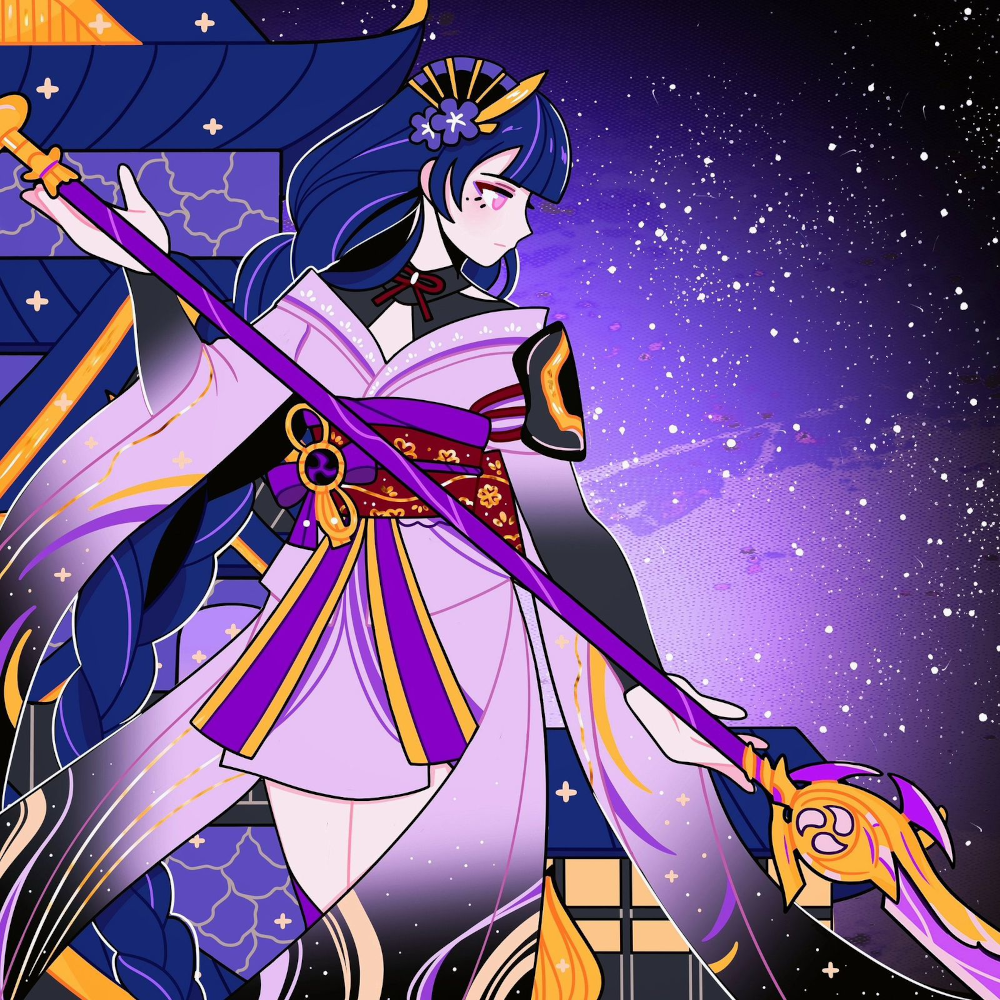

Testes gerais
Testando o uso de imagens, paragrafos e quebra de linhas.


ta.
Meus emojis Fav
Rostos
Maos
Animais
Minhas redes sociais
Quem sou eu?
Como falar comigo?
Links de pag 2 / 3
acessar pagina 2
podemos acessar tambem a pagina 3 abrindo uma nova aba.
